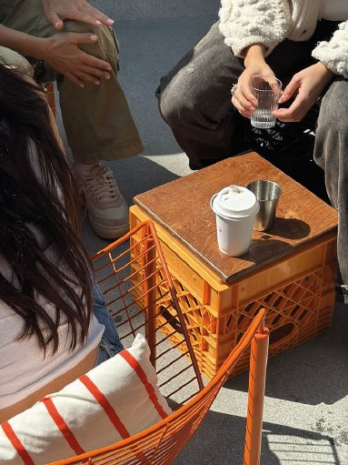

Sobre nosotros

Canela nació en Palermo a partir de una obsesión muy simple: hacer el roll de canela que siempre quisimos encontrar.
Después de muchas pruebas, masas, rellenos y cafés, abrimos nuestro propio lugar para compartirlo.
Somos una cafetería chica, hecha para disfrutar sin apuro: un buen café, algo recién horneado y una mesa donde siempre den ganas de quedarse un rato más.
Canela es eso: nuestro lugar favorito, ahora también es el tuyo.
